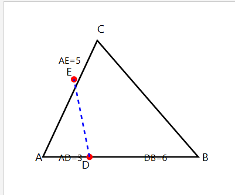
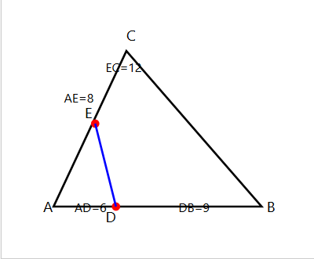
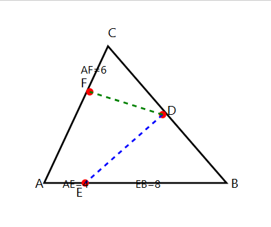
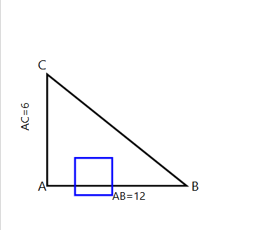

درس: هندسه (1) - مبحث: قضیه تالس، تشابه و کاربردهای آن
زمان: 15 دقیقه | تعداد سوالات: 10 سوال تستی
قهرمان عزیز، سلام! 🚀
این آزمون برای گرفتن نمره نیست؛ یک ابزار دقیق برای پیدا کردن نقاط قوت فوقالعاده و گنجهای پنهان (نقاط قابل بهبود) توئه. هر سوال یک پله برای سبقت گرفتن از رقیباته. با تمرکز کامل و در زمان مشخص شده به سوالات پاسخ بده.
به خودت و دانشت ایمان داشته باش!
در شکل زیر، DE || BC است. طول EC کدام است؟
در مثلث ABC، اگر AD = 4، AB = 10 و DE = 6 باشد و بدانیم DE || BC، طول BC کدام است؟
در مثلث زیر، با توجه به طول پارهخطهای داده شده، کدام گزینه صحیح است؟ (AD=6, DB=9, AE=8, EC=12)
در مثلث قائمالزاویه ABC که در رأس A قائمه است، ارتفاع AH را رسم کردهایم. اگر BH=4 و CH=9 باشد، طول ارتفاع AH کدام است؟
در ذوزنقه ABCD که پایههای AB و CD موازی هستند، پارهخطی موازی دو قاعده رسم شده که ساقها را در نقاط E و F قطع کرده است. اگر AE = 3، ED = 2، AB = 6 و CD = 16 باشد، طول EF کدام است؟
دو مثلث ABC و 'A'B'C متشابه هستند. اگر نسبت تشابه این دو مثلث 2/3 باشد و مساحت مثلث ABC برابر با 24 سانتیمتر مربع باشد، مساحت مثلث 'A'B'C چند سانتیمتر مربع است؟
در مثلث ABC، از نقطه D روی ضلع BC، دو خط موازی با دو ضلع دیگر رسم شده که AB و AC را به ترتیب در E و F قطع کردهاند. اگر AE = 4، EB = 8 و AF = 6 باشد، طول FC کدام است؟
در مثلث قائمالزاویه ABC (قائمه در A)، مربعی مطابق شکل محاط شده است. اگر AB = 12 و AC = 6 باشد، ضلع مربع کدام است؟
در مثلث ABC، میانه AM رسم شده است. نقطه P روی AM چنان قرار دارد که AP = 2PM. امتداد خط BP، ضلع AC را در نقطه Q قطع میکند. نسبت AQ/QC کدام است؟
در مثلث ABC، خط DE موازی با BC رسم شده است (D روی AB و E روی AC). کدامیک از گزارههای زیر، لزوماً صحیح نیست؟